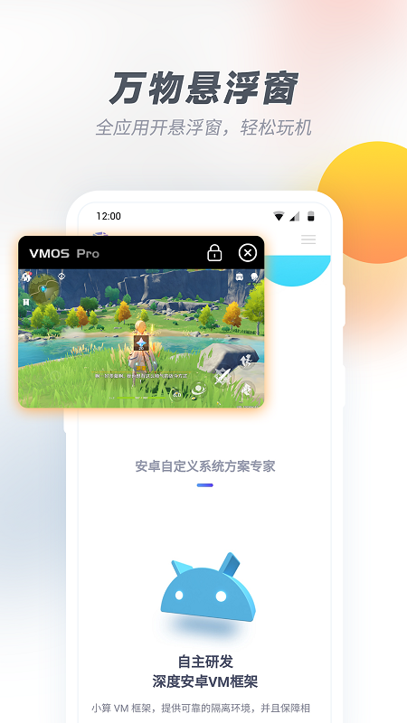
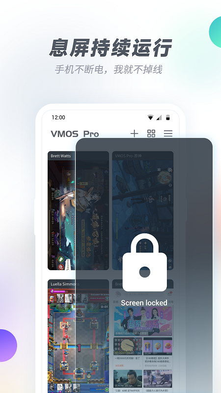

装了大半年的 VMOS Pro：从"就是个多开器"到"离不开的第二系统"
从初次装 VMOS Pro 到现在半年多，踩过内存分配的坑、被厂商 ROM 杀过无数次后台、靠克隆省了不知道多少重装时间。这篇聊聊长期用下来哪些地方越来越顺手，哪些问题到现在还没解决。
去年冬天从 VMOS Pro官网 拿到安装包装的，当时就是奔着"一台手机跑两份微信"去的——工作号和私人号分开，不想再在两台手机之间切换。朋友也提过可以去官方下载页面拿最新版，但我当时已经装好了就没折腾。那时候对它的认知就一句话：安卓模拟器搬到真机上。现在大半年过去，这套认知得推翻重写。
悬浮球：从"挡视线的累赘"到"我的第二根手指"
刚装的时候最烦的就是那个悬浮球。绿色的小圆球常驻屏幕边缘，打字的时候挡半个按键，看视频刚好压在进度条上。第一次开机我就想把它关掉，研究了五分钟发现关不掉——它就是 VMOS Pro 的整个操作中枢。
现在呢？它大概是我手机上用得最多的按钮之一。绿色代表我在真机、蓝色代表我在虚拟机，这套颜色编码现在已经是条件反射，瞟一眼就知道自己在操作哪套系统。最常用的几个动作：长按切全屏、点一下弹菜单、快捷应用区放了微信和挂机游戏，从真机切到虚拟机打开游戏两秒钟。
有意思的是真机和虚拟机环境下悬浮球的菜单完全不一样——真机里能切悬浮窗、能调声音；虚拟机里能返回真机、能唤出多任务。两套菜单各自针对当前环境的需求，没有冗余。当初觉得这设计多此一举，现在想想，如果一套菜单混着来才是真的会误触。

内存分配：踩过的坑堆起来能写一页配置表
一开始我给虚拟机随便划了 4GB 内存——心想我 8GB RAM 的手机，一半给虚拟机应该够了吧？结果第二天就遇到问题：游戏开二十分钟闪退，有时候切回真机再切回来，虚拟机整个进程被系统杀了，里面的微信直接离线。
后来翻了一下VMOS Pro文档才搞明白——虚拟机的内存是"借"来的，不是"买"来的。我那个 8GB 真机的建议分配是 2.5-4GB，还得留 20% 给系统做缓冲。之前划 4GB 等于把真机自己逼到了内存耗尽的边缘，系统一紧张就杀最占资源的进程——毫无疑问就是 VMOS Pro。
现在我的固定配置是虚拟机 3GB，同时只跑一台。把虚拟机分辨率降到 720P 也确实有用，GPU 压力小了之后不仅不杀进程，游戏帧率反而比之前还稳。低内存真机用户真的别贪多，老老实实按建议值来。
克隆功能：省下来的时间比想象中多太多
第一次用克隆是因为我花了半个下午给一台虚拟机配好了 ROOT + Xposed + 常用模块，又不想再花半小时重装一遍。点了一下虚拟机卡片上的"克隆"按钮，等了大概四十秒，列表里就多了一台一模一样的虚拟机。
这事儿当时给我震了一下——秒复制一套完整环境，比云手机重新部署快太多。后来我养成了一个习惯：先在一台"干净模板"虚拟机里把所有配置调完，包括常用 App、自启项开关、文件中转站路径，然后克隆出三四台给不同账号。这样每开一个新号只需要登录，不用从头折腾。
但克隆有个坑我踩过：源虚拟机里登录了微信，克隆出来的新虚拟机里微信也是登录状态，而且用的是同一个账号。微信服务器很快就检测到异常，两个号轮流下线。后来学乖了，克隆只克隆"干净模板"——只装 App 不登录账号，新虚拟机到手再登新号。
后台运行：高估了"稳"，低估了厂商 ROM 的狠
这是用得最久也最烦的一个点。VMOS Pro 的后台运行原理我大概能说清楚——真机不杀 VMOS Pro 进程，虚拟机内部的 App 就一直在前台。听起来很美好对吧？
实际上我被小米的 MIUI 杀后台杀到暴躁。最开始 VMOS Pro 没加进电池优化白名单，锁屏十分钟回来虚拟机就没了。加了白名单之后好一点，但还是偶尔被杀，尤其是我同时开真机游戏和虚拟机挂机的时候。排查过好几轮：内存够、白名单加了、锁屏清理关了、开发者选项里的后台进程限制也改成标准了——还是会有莫名其妙被杀的时候。
说个反直觉的：重启真机比瞎排查有用得多。我现在养成了习惯，遇到虚拟机频繁被杀后台，先重启一次。八成的概率重启之后就恢复正常，剩下两成再慢慢排查。

长期观感修正：当初低估了什么
刚装的时候我以为 VMOS Pro 就是个"多开工具"，功能单一。现在它更像我手机上的第二套系统——工作号、测试环境、偶尔装一些不敢在真机上碰的实验性 App，全扔给虚拟机。
当初觉得悬浮球碍事，现在没有它反而不适应。当初觉得内存分配随便来就行，现在每次升级系统都要重新核对一下真机剩余 RAM 再调整虚拟机配置。当初以为后台稳是理所当然，现在明白这事儿的上限在厂商 ROM，不在 VMOS Pro 本身。
唯一没变的：克隆功能还是我最喜欢的。每次用都觉得——当初花半小时配好的模板，现在四十秒就能复制一份，这功能值回票价。
什么时候该换
目前还没打算卸载。工作号和私人号分开的需求是刚性的，虚拟机作为测试环境也还在用。但如果哪天我换了 4GB RAM 以下的手机，或者工作场景变了不需要双开，可能就会考虑去掉它。
短期内没这个信号，继续用着。
顺便说一句，整理好的这套软件资料我分别放在了 GitHub、Gitee 和 GitCode 上，国内访问哪个顺手就用哪个。